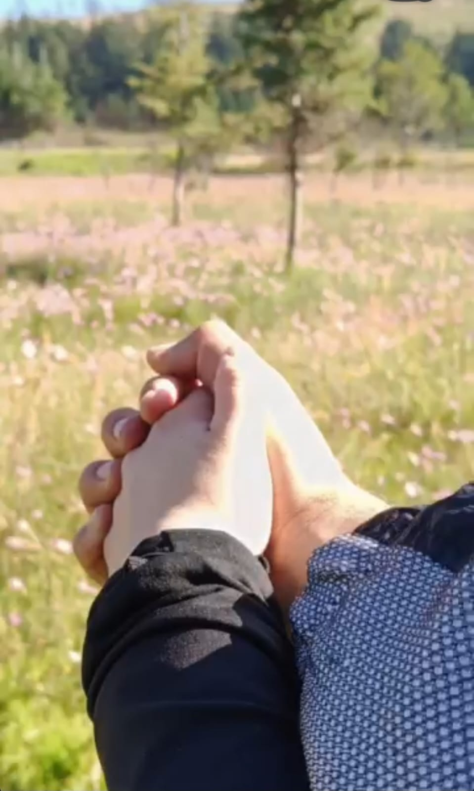
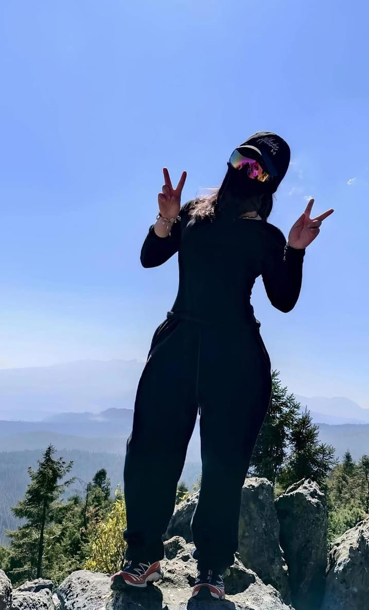
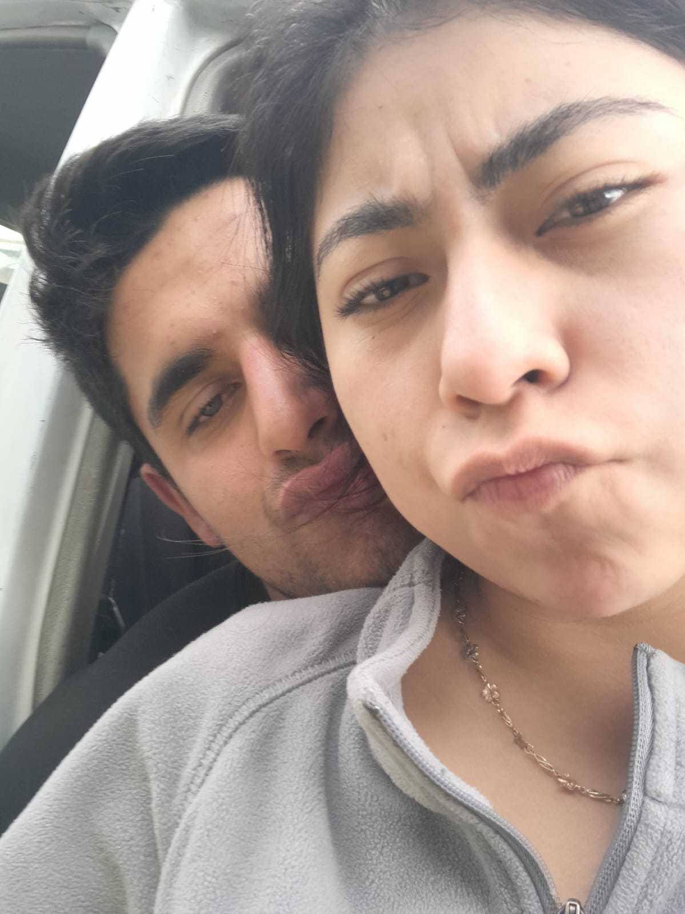
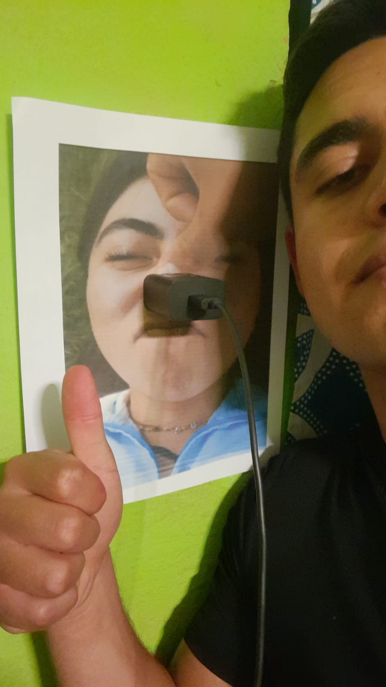
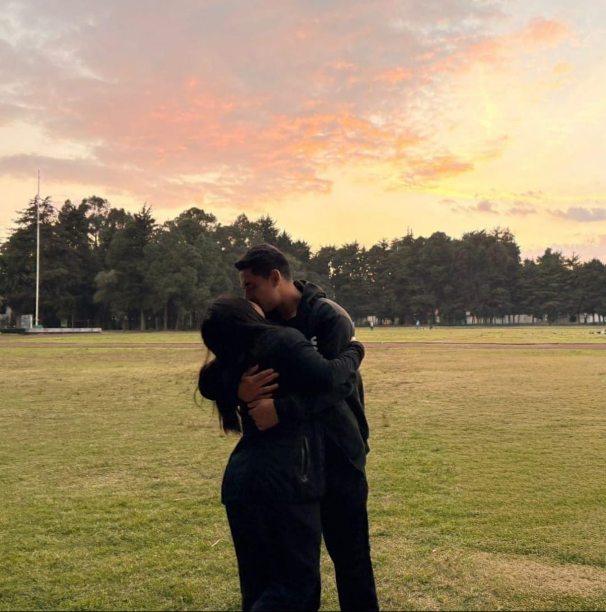

Amor, solo quiero que sepas lo mucho que te amo. Eres una persona muy especial para mí y de verdad valoro cada cosa, tu forma de ser, tu manera de pensar y hasta los pequeños detalles que a veces pasan desapercibidos, pero que para mí significan mucho.
Estar contigo me ha hecho darme cuenta de muchas cosas, y una de ellas es que quiero ser mejor, no solo por mí, sino también por ti. Quiero crecer, mejorar como persona y poder darte lo mejor de mí en todos los sentidos.
No eres perfecta, y yo tampoco lo soy, pero aún así te elijo, te valoro y me importas muchísimo. Gracias por estar en mi vida, por los momentos, por lo bueno y hasta por lo difícil, porque todo eso también nos hace crecer.
Aunque el camino pueda ser complicado ocaciones, quiero que sepas que te voy a elegir siempre y apoyarte en todas tus metas que se que son grandes pero tambien confio en que lo lograras, y pienso aportarte y no restarte. Siempre que necesites a alguien sabes que puedes contar conmigo